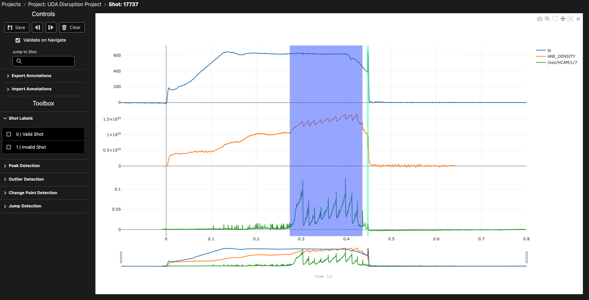

Time Series Labelling Interface
The time series labelling interface is a core UI in TokTagger, designed for interactive labelling and analysis of multi-variate tokamak diagnostic data. This interface allows you to visualize signals, create annotations, and navigate through your dataset efficiently.
Overview

The time series view displays multiple diagnostic signals stacked vertically, each with its own y-axis, sharing a common time axis. This layout enables you to visualize correlations between different signals and identify important events across multiple diagnostics simultaneously.
Interface Components
Plot Area
The main plot area displays your time series data as line plots. Each signal occupies its own subplot with:
- Independent Y-axis: Each signal has its own vertical scale, optimized for its value range
- Shared X-axis: All signals share the same time axis at the bottom, measured in seconds
- Range Slider: A range slider below the time axis allows quick navigation and zooming to specific time windows
Navigation Controls
At the top of the interface, you'll find navigation controls to move through your dataset:
- Previous Button (◄): Navigate to the previous sample in your project
- Next Button (►): Navigate to the next sample in your project
- Save Button: Save your current annotations
- Delete Button: Remove selected annotations
Keyboard Shortcuts:
Shift + ←: Navigate to previous sampleShift + →: Navigate to next sample
Sample Information
The interface displays the current sample ID and project information, helping you keep track of which data you're annotating.
Creating Annotations
TokTagger supports two primary types of annotations for time series data:
Time Regions (Zones)
Time regions are rectangular annotations that span a time interval and cover all signal values. They are ideal for labelling extended events or operational phases.
To create a time region:
- Right-click anywhere on the plot to open the context menu
- Select "Add Time Region" and choose a category (e.g., "ELM", "L-mode", "H-mode")
- Alternatively, click and drag horizontally across the plot to create a time region interactively
Visual appearance: Time regions appear as semi-transparent colored rectangles spanning the full height of all subplots. The color corresponds to the category assigned.
Available categories:
- ELM
- L-mode
- H-mode
- Thermal Quench
- Current Quench
- Sawtooth
- IRE (Internal Reconnection Event)
- Locked Mode
- VDE (Vertical Displacement Event)
- Unknown
Time Points (VSpans)
Time points are vertical line annotations marking specific moments in time. They are useful for identifying instantaneous events or transitions.
To create a time point:
- Right-click anywhere on the plot to open the context menu
- Select "Add Time Region" and choose a category (e.g., "Disruption", "Thermal Quench")
Visual appearance: Time points appear as vertical colored lines extending through all subplots.
Available categories:
- Disruption
- Thermal Quench
- Current Quench
- Control Loss
Modifying Annotations
Selecting Annotations
- Click on any annotation to select it
- Selected annotations appear with increased opacity and can be modified
Moving Annotations
- Time Regions: Click and drag the body of a time region to move it horizontally along the time axis
- Time Points: Click and drag the vertical line to reposition it
Resizing Time Regions
Time regions have resize handles on their left and right edges:
- Hover over the left or right edge of a time region until the cursor changes
- Click and drag the edge to adjust the start or end time
Minimum width: Time regions have a minimum width of 0.1% of the current visible time range to ensure they remain visible and selectable.
Changing Categories
To change the category of an existing annotation:
- Right-click on the annotation to open its context menu
- Select "Change Type" and choose the new category
Deleting Annotations
To remove an annotation:
- Right-click on the annotation to open its context menu
- Select "Delete" from the context menu
Alternatively, select the annotation and press the Delete button in the navigation controls.
Plot Interaction
Zooming and Panning
The time series plot supports interactive zooming and panning:
- Pan: Click and drag on the plot background to pan horizontally
- Zoom: Use the range slider at the bottom to zoom into specific time windows
- Reset: Double-click on the plot to reset the view to show all data
Note: Y-axes have fixed ranges and do not zoom, ensuring consistent signal scaling.
Disabling Interactions
When holding the Alt (or Option) key:
- All annotation interactions are temporarily disabled
- This allows you to zoom and pan the plot without accidentally selecting or moving annotations
Working with Multiple Signals
The time series interface automatically arranges multiple diagnostic signals in a stacked layout:
- Each signal occupies an equal vertical space
- Signals are synchronized along the time axis
- Annotations span across all signals, making it easy to see temporal relationships
Common multi-signal workflows:
- Identifying correlations: Look for simultaneous changes across different diagnostics
- Event detection: Use one signal to identify events (e.g., D-alpha for ELMs) and verify with others
- Phase labelling: Label operational phases visible across multiple diagnostics
Automated Annotation Tools
For faster annotation, use the automated annotators to detect patterns in your signals:
- Peak Detection: Identify sharp peaks in signals (useful for ELMs)
- Change Point Detection: Detect transitions between operational phases
- Jump Detection: Find discontinuities (useful for sawteeth)
- Outlier Detection: Identify anomalous data points
See the Annotators guide for detailed information on each tool.